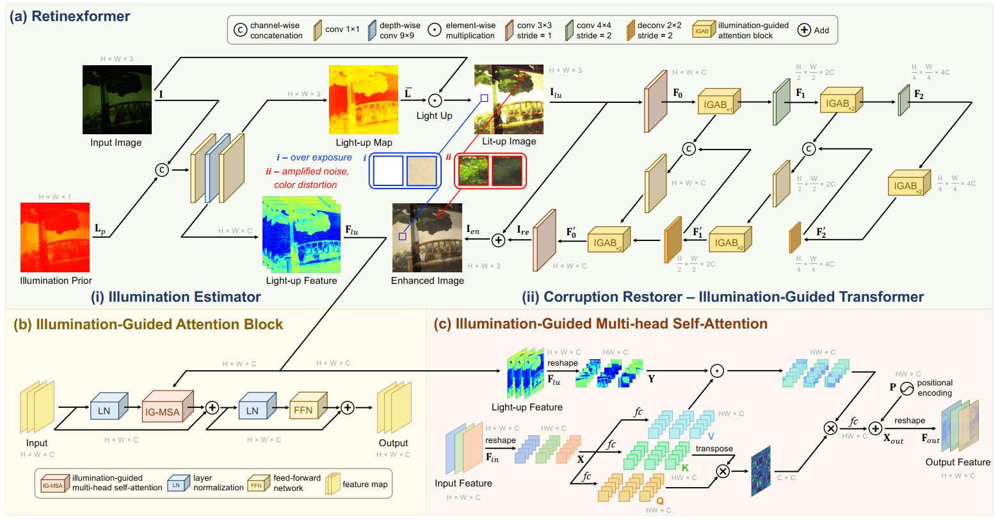
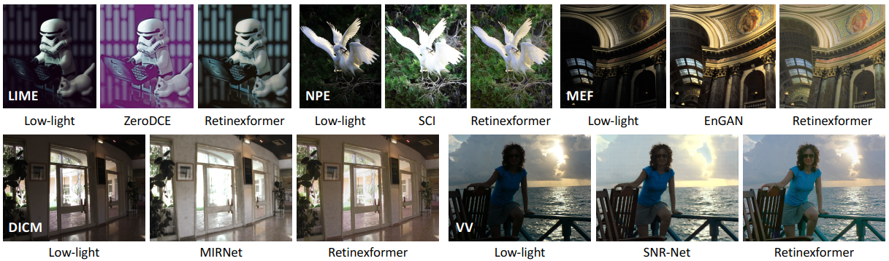
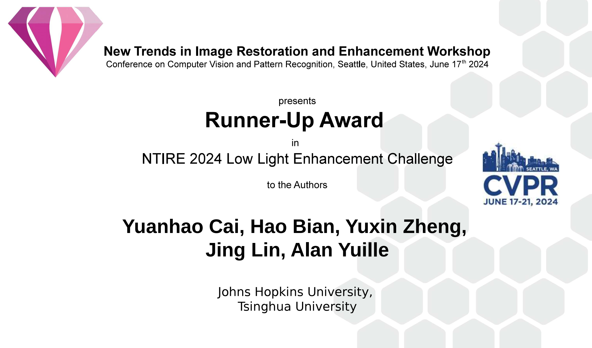

Low-light Video Enhancement
Retinexformer enhances each frame of the nighttime footage. Both views play in sync.
Unable to play this clip. Open video
Low-light Object Detection
The same zero-shot detector runs directly on the nighttime frames and again after Retinexformer enhancement. Grounding DINO Tiny
Unable to play this clip. Open video
Low-light Semantic Segmentation
The overlays show pixel-level predictions using the same Cityscapes colors in both views. SegFormer B2
Unable to play this clip. Open video
- Road
- Sidewalk
- Building
- Vegetation
- Sky
- Car
- Person
Low-light Human Pose Estimation
The same pose estimator predicts 2D joints in the original and enhanced frames. RTMPose-M
Unable to play this clip. Open video
Video demo settings
All four demos apply Retinexformer frame by frame at 704 × 396 using the released NTIRE checkpoint. Each downstream model uses identical weights and settings on the two inputs. Retinexformer checkpoints
- Grounding DINO uses the prompts “person,” “bicycle,” and “car,” with a box threshold of 0.34 and a text threshold of 0.25.
- SegFormer B2 uses the Cityscapes checkpoint and the same mask opacity on both sides.
- YOLOX-M locates people for RTMPose-M. The overlay shows joints with a confidence of 0.42 or higher.
Source footage is provided under the Pexels license.
Abstract
Brightening a low-light image can expose sensor noise, shift colors, or clip highlights. Retinexformer learns to estimate illumination and restore the corrupted image in one end-to-end model. Its Illumination-Guided Transformer uses lighting features to relate regions with different exposures, helping recover details that are hard to see in the input.
Method
The One-stage Retinex-based Framework first estimates a light-up map and illumination features. The Illumination-Guided Transformer then restores the brightened image. Its attention blocks use the illumination features to model long-range interactions between differently lit regions. Method in the paper

Paper Results
The ICCV paper evaluates Retinexformer on 13 low-light image benchmarks. It also reports 66.1 mean AP on ExDark using a YOLOv3 detector trained for that experiment. Experiments in the paper

NTIRE 2024 Runner-Up Award
Low Light Enhancement Challenge at the CVPR 2024 NTIRE Workshop.

BibTeX
@inproceedings{cai2023retinexformer,
title = {Retinexformer: One-stage Retinex-based Transformer for Low-light Image Enhancement},
author = {Cai, Yuanhao and Bian, Hao and Lin, Jing and Wang, Haoqian and Timofte, Radu and Zhang, Yulun},
booktitle = {Proceedings of the IEEE/CVF International Conference on Computer Vision},
year = {2023},
pages = {12504--12513}
}